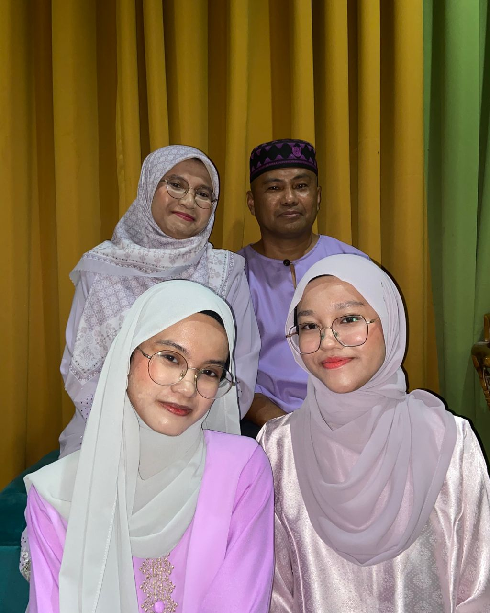
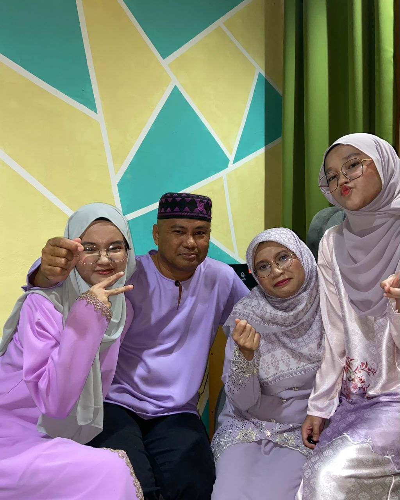
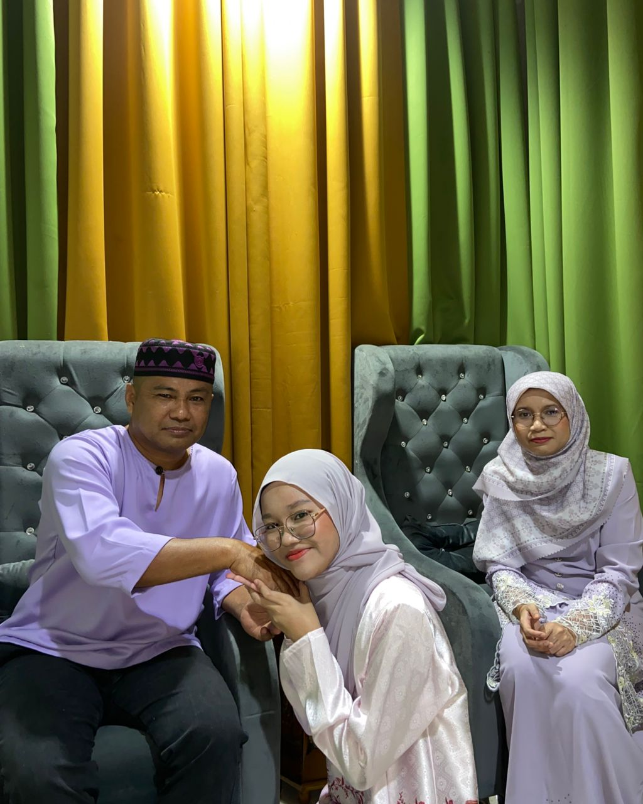
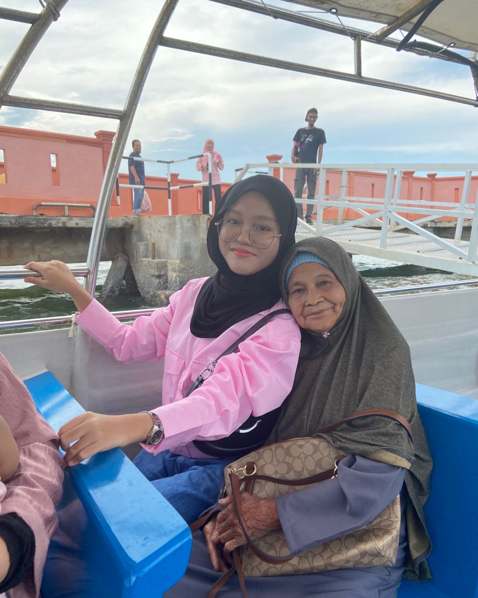
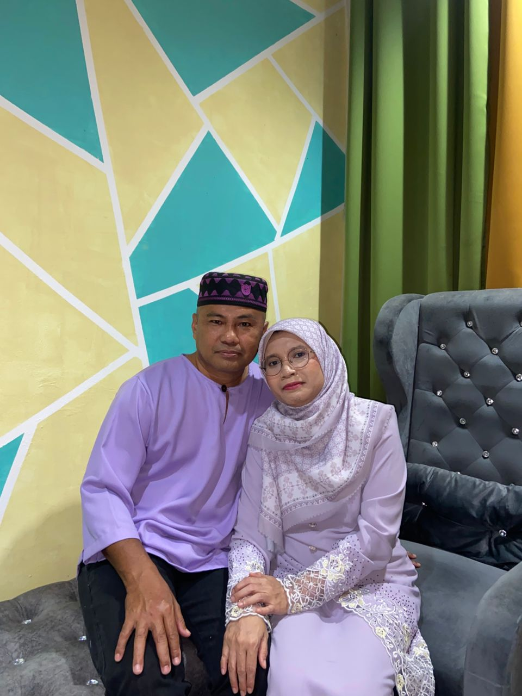
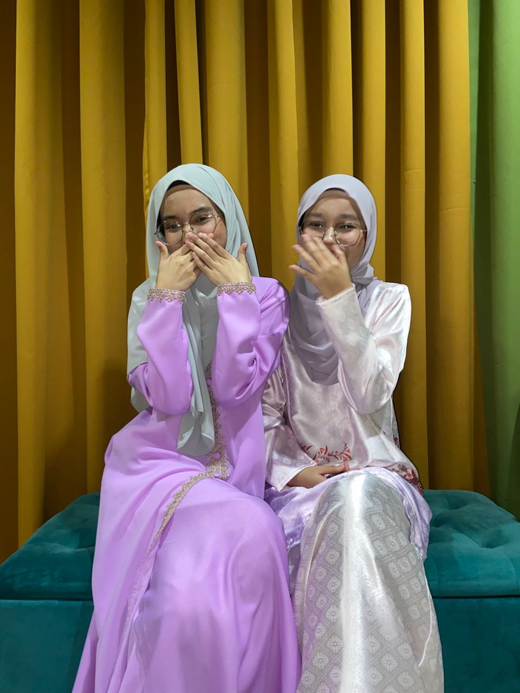
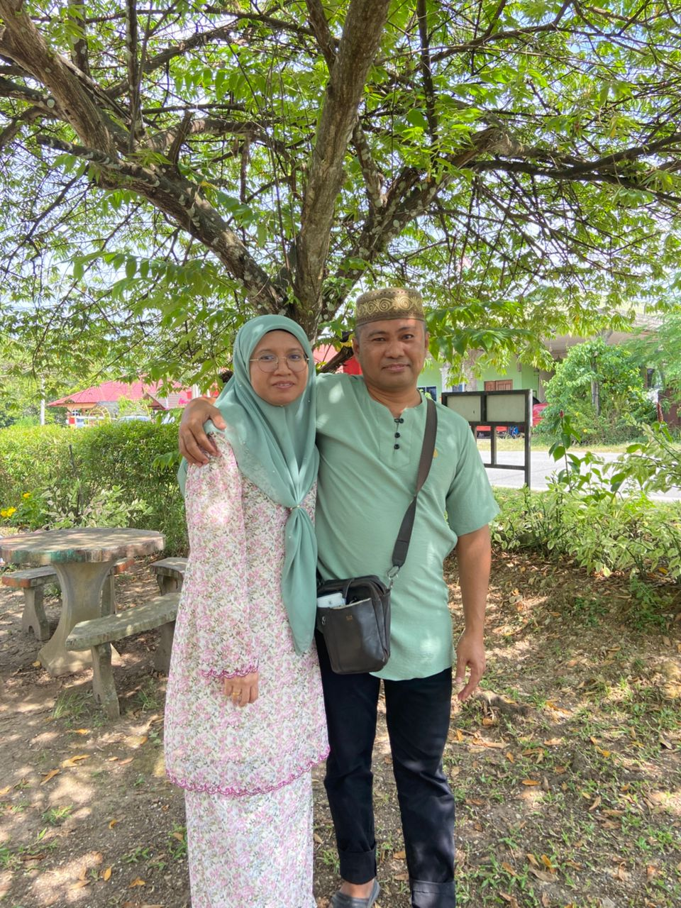

My family!
In this page I will show you my family members. My family consists of 4 members whish is my father, my mother, my sister and me. My parents marriedn on March 24, 2001 which mean they have been married for 24 years







My Abah!
This is my dad, his name is Norshorafendi Bin Samat. He is 53 years old this year. His birthday is on May 18, 1972. Right now he is working as public servant in Klinik Kesihatan Bukit Betong and will be retired in 2 years. Ever since I was a kid, I was very spoiled by him. He will buy anthing that I want even sometime it just a ridiculous toy like slime. 😂
My Ummi!
This is my mom.Her name is Maimunah Binti Mohd Zainudin. She is 47 years old this year. Her birthday is on November 22, 1978. Right now she is working as public servant in Hospital Kuala Lipis. My mom have been very supportive in my life. She will support any of my decision. She also will be the proudest one when I get an achievement.
My Kakak!
This is my one & only older sister.Her name is Nur Qurratu' Aini Binti Norshorafendi. She is 23 years old this year. Her birthday is on January 20, 2002. She is a final year student in Bachelor of Information Management (Hons) Library management in UiTM Rembau. But right now she is undergoing internship in UiTM Jengka and will be graduated soon.She is the person that motivates me to study in Diploma of Information Management